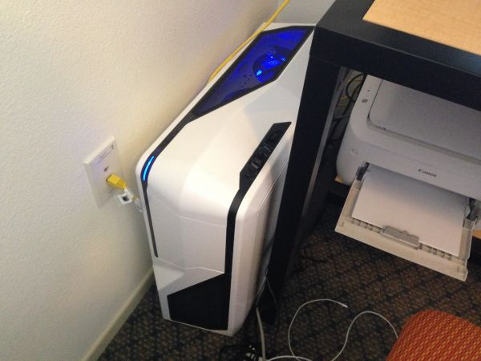
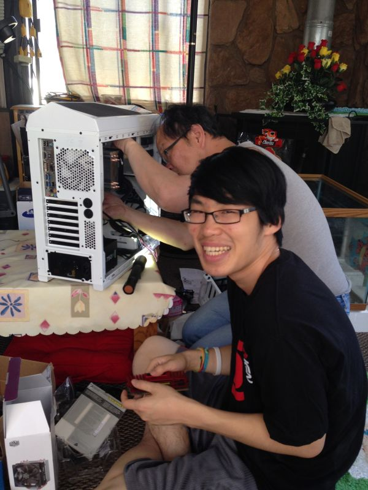
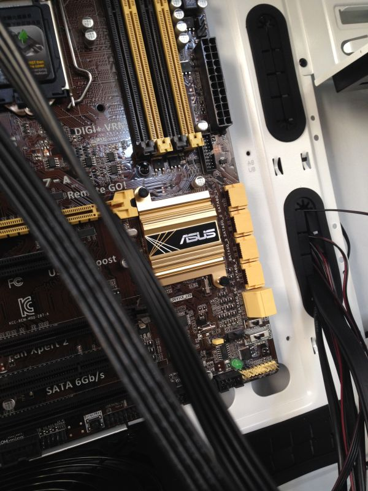
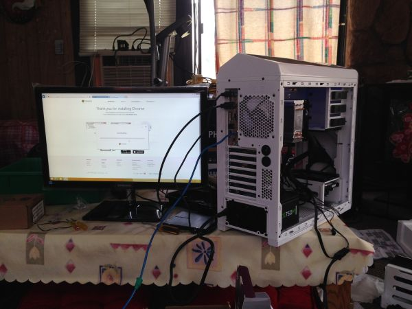

A newbie's journey into PC building.
You may remember that back in April I expressed my desire to build a PC from scratch. Part of the reason was that I wanted to play more video games; another was because I felt it would be a good experience for me as a university student seeking a bachelor’s degree in computer science. After soliciting feedback from you guys, I went ahead and bought all the parts I needed in May and assembled my very first PC in early June. Since then, I have done some tweaking (and a lot of moving to my off-campus apartment), and while it has admittedly taken longer than excusable for me to write this blog – well, it is finally here now.
Perhaps you too would like to build your own PC. Indeed, building something so simple yet beautifully complicated may seem intimidating at first, but I have documented my foray into PC-building so you can see second-hand what it is like to build a computer from scratch for the first time.
I have divided my post into three primary sections. Feel free to skip around to whichever you are most interested in.
Table of Contents:
- Why Built a PC?
- What Parts Did You Choose?
- What Does the Final Build Look Like?
The biggest question regarding building a new computer is whether or not it is worth the money. That is a completely reasonable concern, of course; building a decent rig may be the biggest personal investment you have made in a while – or in my case, ever. Thus, I have compiled a list of things to think about when considering building your own PC.
First off, I am going to assume than anyone reading this blog is more interested in building a gaming PC than just a regular one. In the latter case, getting a pre-built PC or a decent laptop may be just as sensible of an investment as building your own. It is only when you get to the more mid-to-high tiered parts that you begin saving a significant amount of money when building a PC (though, of course, the experience itself is priceless).
So say you are interesting a building a gaming PC. The obvious question then becomes less “is it worth my money” and more “should I spend my money elsewhere.” With the latest generation of consoles on the market right now, an expensive gaming PC may not seem to stack well against a $400 PlayStation 4 or Xbox One. However, there are a few things to keep in mind.
Firstly, depending on the hardware you choose to purchase, your games will look better on PC, even if you only choose to settle with a mid-tier rig.
Secondly, games are usually much cheaper on PC. Steam Sales regularly mark games 75-90% off the retail price, and even without the discounts PC games are usually $5-10 cheaper. Humble Bundles allow you to download a set of games for any price you want. Think about it this way: if the average price you pay for a game on PC is half the price you pay on consoles, you will have ended up spending about the same amount of money on both after purchasing 16-20 games, depending on your rig.
Thirdly, there are more games on PC, though most of them are smaller titles such as those created by indie developers. Obviously, you will not be getting Uncharted or Mario on your PC, so there is that to consider as well. It is also worth noting that almost every game that you have on your old PC will work on your new one (so find that install disc for RollerCoaster Tycoon!).
Fourthly, upgrading is relatively cheap. Even after seven years, there will be many parts in your PC that you can reuse, and at the end of the day you will only need to purchase a few hundred dollars’ worth of upgrades per generation. Also, as PC parts become more and more available to the mainstream market, prices will inevitably drop over time.
Finally, you will be using your PC for more than just gaming (otherwise, you might as well just get a Steambox). Unlike your gaming console, you will be using your computer to complete tasks as photoshopping, word processing, video editing, computer programming, and other obvious things that you use your computer for on a daily basis. In that case, building your own PC is a sensible investment when you are in need of a new computer anyways.
So, you have decided that you want to build your own PC, but where should you start? Even if you do have a basic knowledge of how computers work, the hundreds of different parts options available on the market right now can be overwhelming. The best thing to do then is to go step by step.
First off, you will need a budget. Logical Increments provides an excellent tool that estimates how much a PC would cost to build at a given tier level in today’s market. I personally chose to go for an “Excellent” PC with a budget of $1000 for the computer itself.
Once you have decided your price range, it is time to move on to the parts. Before I continue, I would like to share with you a few websites that helped me on my journey:
- Logical Increments – estimate the cost to build different tiered computers.
- Elite Gaming Computers – compare pros and cons on today’s most popular parts.
- PC Part Picker – choose the parts you want and find the best deals online.
- Building a PC by Lifehacker – a somewhat dated but still useful guide to building your PC.
If you're interested, you can find every part I have chosen by clicking here.
Processor
My choice: Intel Core i5-4670K Quad-Core ($220)
The CPU is what lets your computer do things. Think of it like your computer’s brains. It used to be that consumers had to choose between Intel and AMD processors, but nowadays it seems as if Intel is targeting the more high-end market and AMD covers the lower tiers. After choosing to go Intel, I had the option to either go with an i5 processor or the more advanced i7, though since I primarily wanted to use my PC for gaming (and also stay within my budget), the i5 seemed just fine. Plus, if I ever needed some extra juice, I could always overclock it and make it run even faster.
Motherboard
My choice: Asus Z87-A DDR3 1600 LGA 1150 ($140)
The mobo is the thing that you connect all your other parts to. Think of it like your computer’s heart. The best motherboards are the ones that are fully featured and allow room for you to upgrade easily. Today’s Intel motherboards come in many varieties, but the most modern and popular model is the LGA 1150. A lot of different manufacturers make LGA 1150 motherboards, though I ultimately chose the Asus Z87-A for its complete set of features at a relatively low cost. Not only did it have everything I needed in a motherboard, but it also has a lot of room available for upgrades if I were to need them in the future.
Memory
My choice: Corsair Vengeance 8GB (2x4GB) DDR3 2133MHz ($85)
The RAM determines how much stuff your computer can do at a time. Think of it as your computer’s, well, memory. Most AAA games nowadays work best with 8GB of memory, though a lot of people like shoving more into their computer just for the sake of it. It is also worth noting that opting for two 4GB sticks is faster than one 8GB stick, because the computer has more ways to access your computer’s RAM that way. Also keep an eye out for fluctuating prices; the most popular RAM’s run at 1600MHz, but you can find even faster memory sticks go on sale all the time.
Solid State Drive
My choice: Crucial M500 120GB ($67)
Originally I did not plan on getting a SSD because of its price; they are about ten times pricier than traditional hard drives. However, if you want a computer to run its quickest in today’s modern age, getting a SSD is a must. The Crucial M500 120GB SSD was enough for me to install most of my programs while leaving more than enough room to spare in the future. Though games do load quicker on a SSD, I have so many of them that I decided to put them somewhere else…
Hard Disk Drive
My choice: Seagate Barracuda 1TB ($50)
Hard drives come in pretty cheap nowadays thanks to the rapid proliferation of SSD’s, but 120GB just is not enough for a gamer like me. By expanding my storage space with a 1TB hard drive, I am able to store all of my documents, music, and games in one place without worrying about filling either the HD or the SSD up to maximum capacity. And for $50, that is a lot of bang for your buck.
Video Card
My choice: EVGA GeForce GTX760 SuperClocked w/EVGA ACX Cooler 2GB GDDR5 256bit ($250)
Most motherboards come with an onboard graphics card, but if you want to play games the way they are meant to be played, you are going to need to upgrade to a better graphics card. Right now, there are two major brands of graphics cards available on the market: Nvidia GeForce and AMD Radeon. I chose Nvidia because most games nowadays seem to build their PC ports with GeForce in mind, and also it comes with some cool software that allows you to optimize, stream, and record your game for free. The GTX760 is often seen as the sweet spot between mid-tier and high-end graphics cards, and going any higher would definitely break the bank for me.
Power Supply
My choice: Corsair CS 750W ATX ($80)
If you want your computer to work, you will want a PSU. Without it – well, you will not be able to plug your computer in. Nvidia suggests a 500W minimum when it comes to powering the GTX760, but if you plan on upgrading, you will want to go a bit higher, as the PSU will likely be a thing you will never need to replace.
Case
My choice: NZXT Phantom 410 White ($80)
My dad hates my case. He thinks it is shaped weirdly and is far too big. I think it is perfect. The NZXT Phantom 410 is a beautiful beast, complete with flashy lights and enough room to stick a puppy in it even after installing everything. It is more expensive than most mid-sized towers though, and that is if you can even call it a mid-sized tower (it is like a few square inches below regulatory full-sized towers). However, if I were to stare at my computer for several years, I might as well make it look pretty.
Cooler
My choice: Cooler Master Hyper 212 EVO ($31)
The worst thing that can happen to your computer is that the moment you turn it on it begins to melt. Most motherboards and cases come with more than enough fans you will ever need, but to ensure that my computer does not decide to want to explode one day, I thought I should probably grab a decent cooling fan to keep my PC at just the right temperature. Liquid coolers are also a popular option nowadays, but they are still far too expensive for the average gamer looking to build their first PC.
Total Cost: $1003
And all of these things combined cost just around one grand. All I needed now was to grab a spare monitor, mouse, and keyboard and I was ready to go! After installing Windows 8 (which I got for free as a student), everything ran perfectly and I was able to play games like Watch Dogs and Tomb Raider without a hitch.
Tax: $75
Oh, I forgot about that. That is a lot of tax.
Well, I am glad you asked! This is what the assembled product looks like.

Here is me and my dad trying to figure out where the hell to plug everything in.

A closer look at my motherboard.

Setting everything up.

Here is my desktop, which looks all fancy and stuff thanks to Rainmeter.
Overall, I am very happy with my final build. I have not done any overclocking yet, but I do plan to in the near future. Games like Watch Dogs run very well on high settings, and I was able to import pretty much everything from my old gaming laptop onto this computer. Oh yeah, and I gave my PC a name: Aurorus.
Thanks for checking out this rather long personal blog. Hopefully if you were looking to build your own PC, I helped you out even just a little (or at the very least you were entertained). A quick shoutout to percy99, Toews1987, BadGuysBeware, and StormFuror for all your help, and of course to all my loyal followers for your moral support!
Until next time!
~Bryce